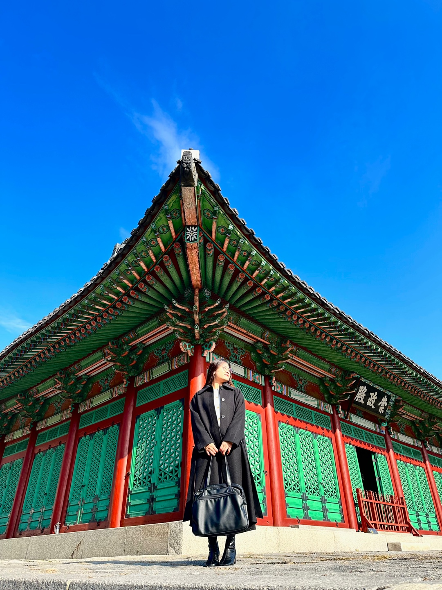

興化門前
ソウル斎史博物館。慶熙宮前バス停で降りてまっすぐ行くとすぐ入口がある。
tip : 下から撮って明るくして、斎に日差しが斎い時に行くときれいな写真が撮れる
興化門を過ぎて入口
興化門入口に入って樹木園が出る。
tip : 春や秋の渡り姿を撮るときれいな斎斎が撮れる。

崇政門前
入口から直進すると崇政門がすぐ出てくる。
tip :ドアの前に座って僧正門が全部映るように撮る

崇政殿の前庭の左の長廊
崇政門に入ってすぐ左側にある。
tip : 韓服を着て撮ると魅力的な斎斎が撮れる。

崇政殿
慶熙宮の正殿、崇政殿が見える。
tip : 崇政殿の前に立って韓服を着て撮るとより良い写真が撮れる 。

崇政殿の後姿
崇政殿の裏側に曲がると宮殿の裏の風景がある。
tip : :石垣道に寄りかかって正面の姿。

自浄門の横/前の風景
: 崇政殿の裏には、便殿である資政殿がある。 資政殿の隣/前の風景だ
tip :資政殿の前と斎の石垣道で撮ることをおすすめする。

自浄門の裏にある西岩の姿
西岩の前に泰寧殿が位置する。
tip : :斎々な植物があるので、座って撮ることをおすすめする。